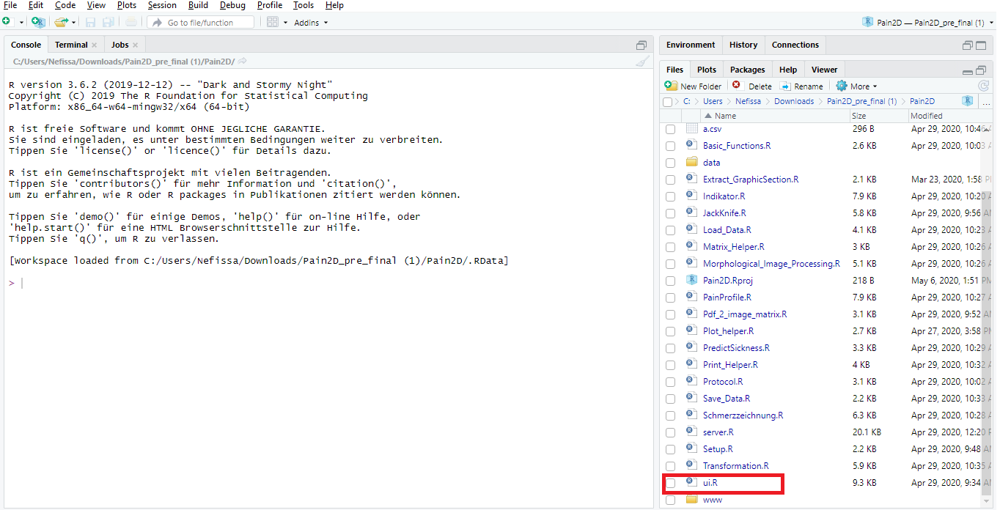
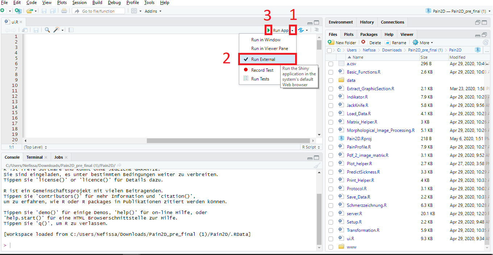
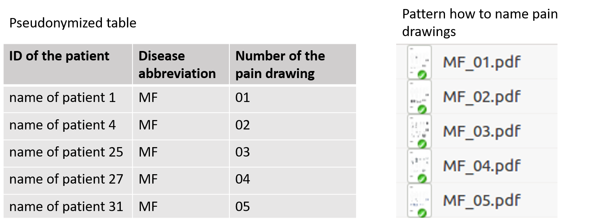
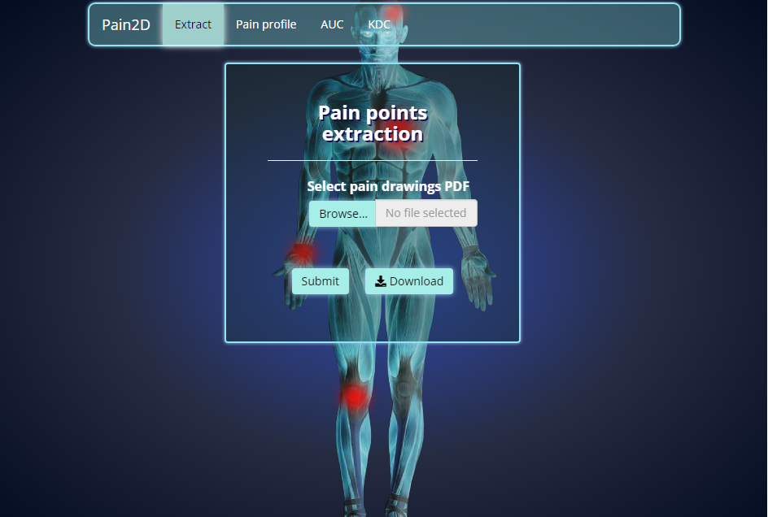
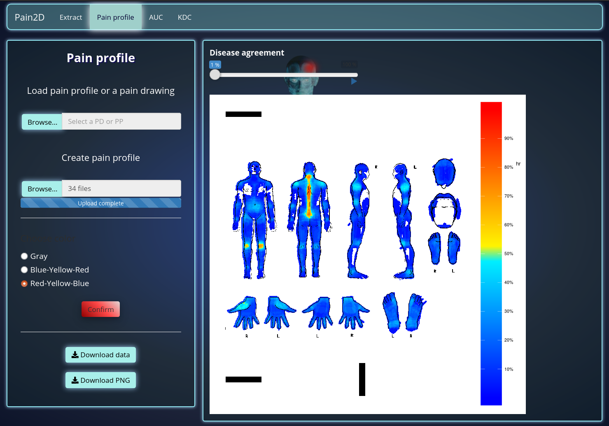
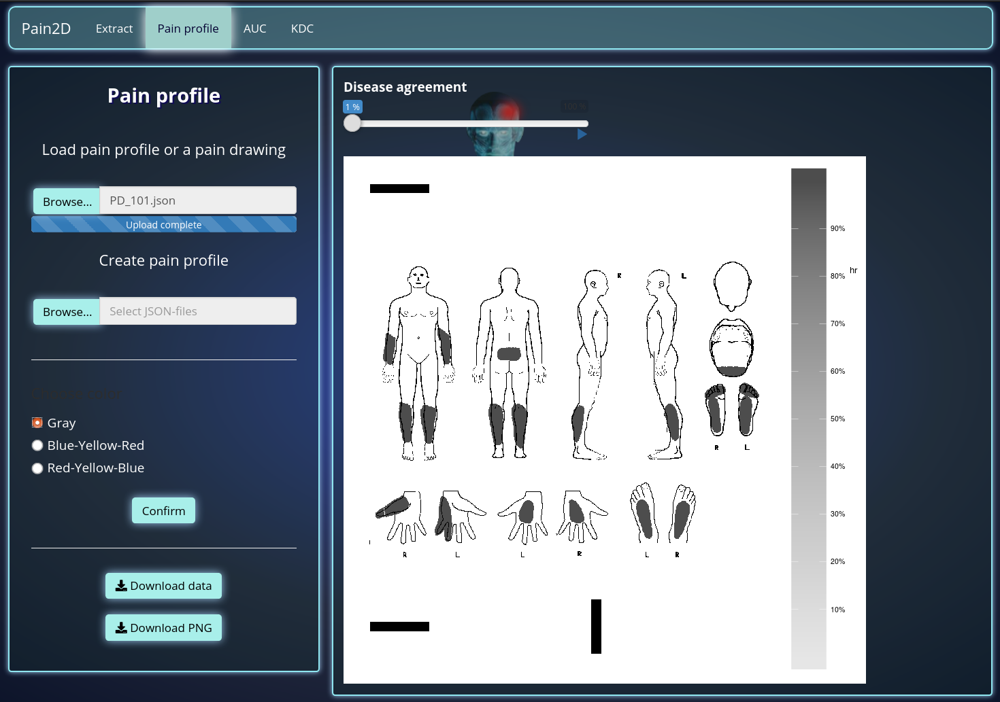
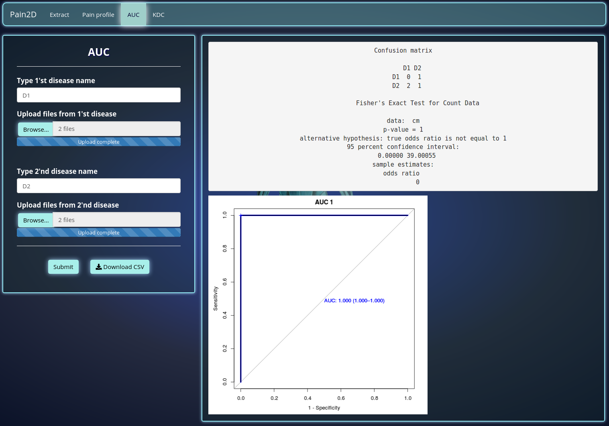
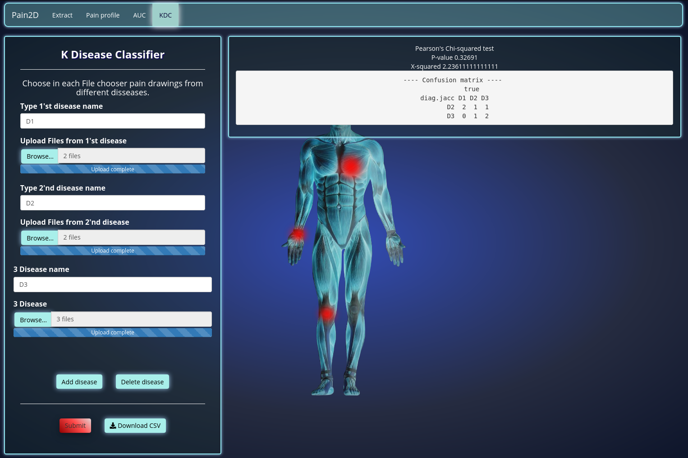
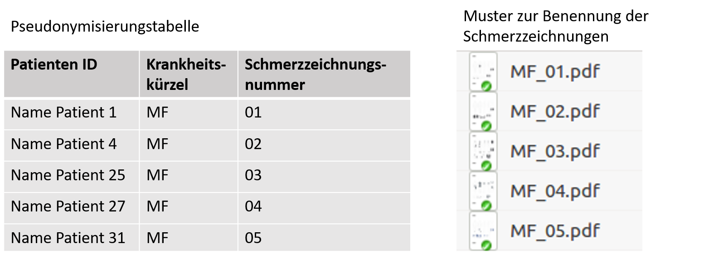

In this tutorial the use of Pain2D is explained step by step. The tutorial is suitable for everyone who is interested in analyzing pain drawings.
Before you start, download Pain2D and note the requirements of the program. For further information please see Download.
To start Pain2D change into the directory “Pain2D” and double-click on the project “Pain2D.Rproj” (symbol with a blue cube). The project is started in Rstudio. In the lower right part of RStudio you find the tabulator “Files” where you click on the file “ui.R” to open it.

Close above the file you find the lettering “RunApp”. Press on the little black triangle behind the lettering. A submenu is opening, where you put a hook on “Run External” by clicking the lettering. Now the application will start in your browser, which is important for some functions of Pain2D. To run Pain2D press the green triangle close to the lettering “Run App”. Pain2D is now opening in your browser.

The file “original.pdf” is the template for a pain drawing. You can find the file in the folder “data/DB/original”. We recommend to keep the folder structure, because a change of the path could affect the function of the program. If you still want to change the path, open the file “Setup.R” and assign the new path to the variable “origin.path.json”.
It is important for the analysis of the pain drawings that the template is printed out in the correct size on a DIN A4 page:
The printed templates are filled in as usual with a black or blue marker and then digitized as described for the further course of the analysis.
Scan the completed pain drwaing and save the document in pdf format. Please observe the following instructions when scanning:
The naming of the pain drawing should be done according to the pattern “disease abbreviation_pain drawing number.pdf”. Please also note the recommendations for pseudonymisation.
Attention!, the following text is only a recommendation! The developers of this program are no specialists for IT security.
It is recommended to pseudonymize the scanned pain drawings. Create a separate table (preferably on a sheet of paper) in which you assign each patient’s pain drawing by means of a pain drawing number. The naming of the pain drawing is done according to the pattern “disease abbreviation_pain drawing number.pdf”. No personal data appear in the name.

To extract pain points from the pain drawings to be analyzed, click on the “Extract” tab. You can now upload one or more pain drawings by clicking on “Browse” and selecting the desired pain drawings in PDF format. Once the files have been uploaded, the message “Upload complete” will appear. Start the extraction by clicking the button “Submit”. A json file containing the extracted pain points will be generated for each pain drawing.

After the extraction of the pain points is complete, you receive a message “Finished extraction. Please download the files.”. Click on “Ok” to close the message and afterwards on the “Download” button to download the json files with the extracted points. We recommend to create a separate folder with an abbreviation for each disease, e.g. for Ehlers-Danlos syndrome a folder with the name EDS, in which the corresponding json files are saved.
When extracting the pain points, it may happen that pain drawings are not recognized. In this case a window appears with information about which pain drawings are affected. Possible reasons for this are:
The extraction of pain points from a pain drawing takes 20 seconds on average and is influenced by the number of pain points drawn.
For the creation and visualization of pain profiles (aka disease image) click on the tab “Pain profile”.
The example below shows a pain profile created out of 34 generated pain drawings and is displayed in the color scheme “Red-Yellow-Blue”. You can save an obtained pain profile either as csv or png file. Follow one of the next two steps of the tutorial.

To save an already created pain profile as a csv file, press the button “Download data”. A Window will appear, where you can choose to either save or open the file. You can visualize the pain profile at any time by uploading the csv-file as described in point 4 in Visualization of the pain profile of a disease.
You have the option to save a generated pain profile with the actual settings of colour scheme and “Disease agreement” in png format. After you have created a pain profile press the button “Download PNG”. A window will open and ask you whether you like to save or to open the file.
The example shows a pain drawing displayed in the color scheme “gray”. There is no difference in the intensity of gray shades, as the picture was generated out of a single drawing.

The runtime complexity of the algorithm for creating a pain profile is in O(n ∗ p), where n represents the number of pain drawings and p the mean number of pain points.
Please note our generated test data in the folder “data/DB”. We recommend to add your own test data to this folder following the folder structure of our test data. If you need additional generated test data please contact our team.
To make a binary prediction for two diseases, go to the “AUC” tab and enter the abbreviations of the diseases to be classified in the two input fields. Then click on “Choose directory” and select the folder with the corresponding json files. It is very important that the disease abbreviations entered correspond exactly to the disease name of the pain drawings and that these have been pseudonymised according to our recommendation (see Pseudonymising the pain drawings).

After the files finished uploading a notification “Upload complete” appears. You can now start the classification by clicking the “Submit” button. As a result, a confusion matrix and a ROC with the AUC value will be displayed.
In order to save the results click on the button “Download CSV”. A window will appear where you can decide to either save or open the csv-file.
The calculation time depends on the number of json files uploaded. The evaluation of 262 pain drawings took about 13 minutes on a standard computer.
To make a classification of two or more diseases change to the tab “KDC”. Enter the disease abbreviations in the input fields on the left and load the corresponding json files by clicking on “Browse…”. Please note that the disease abbreviation must be identical to the disease abbreviation of the pain drawing and match our recommended pseudonymization (see Pseudonymising the pain drawings). If you need additional input fields press the button “Add Fileinput”. To remove additional input fields press on the button “Delete Fileinput”. After the chosen files are uploaded, a notification “Upload complete” appears. You can now press on “Submit” to start classification of the diseases. As a result a confusion matrix appears. You can save the results by clicking the “Download CSV” button. A window appears in which you can choose to either save or open the file.

In diesem Tutorial erklären wir die Benutzung von Pain2D Schritt für Schritt. Es richtet sich an alle Personen und Organisationen, die an der Analyse von Schmerzzeichnungen interessiert sind.
Bevor Sie beginnen, laden Sie sich Pain2D hier herunter und beachten Sie die Anforderungen des Programms an weitere Software. Alle notwendigen Informationen hierzu finden Sie unter Download.
Um Pain2D zu starten, doppelklicken Sie in dem Ordner “Pain2D” auf das Projekt “Pain2D.Rproj” (Symbol eines blauen Würfels). Das Projekt wird in RStudio geöffnet. Klicken Sie nun rechts im Bereich “Files” auf “ui.R”, um die Datei zu öffnen.
im Kopfbereich der Datei finden Sie den Schriftzug “Run App”. Klicken Sie auf das kleine schwarze Dreieck dahinter. Es öffnet sich ein Untermenü, in welchem Sie durch Klicken einen Haken bei “Run External” setzen. Hierduch wird die Applikation in Ihrem Browser ausgeführt, was für einige Funktionen wichtig ist. Starten Sie das Programm nun, in dem Sie auf das grüne Dreieck vor “Run App” drücken. Pain2D öffnet sich nun in Ihrem Browser.
Die Datei “original.pdf” ist die Vorlage für eine Schmerzzeichnung. Sie finden die Datei im Ordner “data/DB/original”. Wir empfehlen die Ordnerstruktur beizubehalten, da eine Änderung des Pfades die Funktion des Programms beeinträchtigen könnte. Wenn Sie den Pfad dennoch ändern möchten, öffnen Sie die Datei “Setup.R” und weisen Sie der Variablen “origin.path.json” den neuen Pfad zu.
Für die Analyse der Schmerzzeichnungen ist es wichtig, dass die Vorlage in der richtigen Größe auf einer DIN-A4-Seite ausgedruckt wird:
Die ausgedruckten Vorlagen werden wie gewohnt mit einem schwarzen oder blauen Filzstift ausgefüllt und anschließend für den weiteren Verlauf der Analyse wie beschrieben digitalisiert.
Scannen Sie die ausgefüllte Schmerzzeichnung ein und speichern Sie das Dokument im pdf-Format. Beachten Sie beim Scannen folgende Hinweise:
Die Bennenung der eigescannten Schmerzzeichnungen muss nach dem Muster “Krankheitskürzel_Schmerzzeichnungsnummer.pdf” erfolgen. Beachten Sie hierbei auch die Empfehlungen zur Pseudonymisierung.
!Achtung, der folgende Text ist nur eine Empfehlung! Die Entwickler dieses Programms sind keine Spezialisten für IT-Security.
Es wird empfohlen, die eingescannten Schmerzzeichnungen zu Pseudonymisieren. Erstellen Sie sich hierfür eine separate Tabelle (am besten auf einem Blatt Papier) in der Sie jedem Patienten die zugehörige Schmerzzeichnung über eine Schmerzzeichnungsnummer zuordnen. Die Benennung der Schmerzzeichnung erfolgt nach dem Muster “Krankheitskürzel_Schmerzzeichnungsnummer.pdf”. Es tauchen in der Benennung keine personenbezogenen Daten auf.

Um aus den zu analysierenden Schmerzzeichnungen Schmerzpunkte zu extrahieren, klicken Sie auf den Reiter “Extract”. Sie können nun eine oder mehrere Schmerzzeichnung hochladen, indem Sie auf “Browse” klicken und die gewünschten Schmerzzeichnungen im PDF-Format auswählen. Wenn die Dateien hochgeladen sind erscheint die Mitteilung “Upload complete”. Starten Sie die Extraktion durch Klicken des Buttons “Submit”. Es wird für jede Schmerzzeichnung eine json-Datei generiert, welche die extrahierten Schmerzpunkte enthält.
Nach einer erfolgreichen Extraktion der Schmerzpunkte erhalten Sie die Nachricht “Finished extraction. Please download the files.”. Klicken Sie auf “Ok” und anschließend auf den Button “Download”, um die json-Dateien mit den extrahierten Punkten herunterzuladen. Wir empfehlen für jede Krankheit einen eigenen Ordner mit einem Kürzel für die Krankheit anzulegen, also beispielsweise für das Ehlers-Danlos-Syndrom einen Ordner mit dem Namen EDS, in dem die entsprechenden json-Dateien gespeichert werden.
Bei der Extraktion der Schmerzpunkte kann es vorkommen, dass Schmerzzeichnungen nicht erkannt werden. In diesem Fall erscheint ein Fenster mit Informationen darüber, welche Schmerzzeichnungen betroffen sind. Mögliche Ursachen hierfür sind:
Die Extraktion von Schmerzpunkten aus einer Schmerzzeichnung dauert im Mittel 20 Sekunden und wird durch die Anzahl der gezeichneten Schmerzpunkte beeinflusst.
Für die Erstellung und Visualisierung von Schmerzprofilen (aka disease Image) drücken Sie auf den Reiter “Pain profile”.
In dem hier dargestellten Beispiel wurde das Schmerzprofil aus 34 generierten Schmerzzeichnungen erstellt und das Farbschema “Red-Yellow-Blue” ausgewählt. Das erhaltene Schmerzprofil können Sie wahlweise als csv- oder png-Datei speichern. Befolgen Sie hierfür einen der nächsten beiden Schritte des Tutorials.
Um ein bereits erstelltes Schmerzprofil als csv-Datei zu speichern, drücken Sie auf den Button “Download data”. Es öffnet sich ein Fenster, in dem Sie auswählen können, ob Sie die Datei speichern oder sofort öffnen möchten. Sie können ein als csv-Datei gespeichertes Schmerzprofil später jederzeit wieder visualisieren, indem Sie die csv-Datei hochladen, wie unter Punkt 4 im Absatz Visualisierung des Schmerzprofiles einer Krankheit beschrieben.
Sie haben die Möglichkeit ein generiertes Schmerzprofil mit den aktuellen Einstellungen bezüglich des Farbschemas und des “Disease agreements” im png-Format zu speichern. Nehmen Sie hierfür alle gewünschten Einstellungen vor und drücken Sie anschließend den Button “Download PNG”. Es öffnet sich ein Fenster, in dem Sie auswählen können, ob Sie die Datei speichern oder sofort öffnen möchten.
Das dargestellte Beispiel zeigt eine erstellte Schmerzzeichnung in dem Farbprofil “grau”. Es sind keine Abstufungen in der Intensität der Grautöne zu erkennen, da das Bild aus einer einzelnen Zeichnung generiert wurde.
Die Laufzeitkomplexität des Algorithmus für die Erstellung eines Schmerzprofils liegt in O(n ∗ p), wobei n die Anzahl der Schmerzzeichnungen darstellt und p die mittlere Anzahl der Schmerzpunkte.
Beachten Sie, dass wir generierte Testdaten im Ordner “data/DB” hinterlegt haben. Wir empfehlen, Ihre eigenen Testdaten in diesem Ordner nach dem vorgegebenen Schema zu speichern. Wenn Sie weitere generierte Testdaten benötigen, wenden Sie sich hierfür gerne an unser Team.
Um eine binäre Vorhersage zu zwei Krankheiten durchzuführen, gehen Sie auf den Reiter “AUC”. Geben Sie links in das Eingabefeld “Type 1’st disease name” das Kürzel der ersten zu klassifizierenden Krankheiten ein. Hierbei ist es sehr wichtig, dass die eingegebenen Krankheitskürzel exakt dem Krankheitsnamen der Schmerzzeichnungen entsprechen und diese nach unserer Empfehlung pseudonymisiert wurden (siehe Pseudonymisieren der Schmerzzeichnungen). Nachdem Sie das Kürzel eingegeben haben klicken Sie unter “Upload Files from 1’st disease” auf “Browse” und wählen den Ordner mit den entsprechenden json-Dateien aus. Es müssen mindestens 2 Dateien je Krankheit ausgewählt werden. Wiederholen Sie die beiden Schritte in den Eingabefeldern für die zweite zu klassifizierende Krankheit.
Nachdem die Dateien vollständig hochgeladen wurden erscheint jeweils der Hinweis “Upload complete”. Nun können Sie die Klassifizierung starten, indem Sie auf den Button “Submit” klicken. Als Ergebnis werden Ihnen eine Wahrheitsmatrix und eine ROC mit dem AUC-Wert angezeigt.
Um das erhaltene Ergebnis in einer csv-Datei zu speichern, klicken Sie auf den Button “Download CSV”. Es öffnet sich ein Menü, in dem Sie gefragt werden, ob Sie die Datei speichern oder sofort öffnen möchten.
Die Berechnungszeit ist abhängig von der Anzahl der hochgeladenen json-Dateien. Die Auswetung von 262 Schmerzzeichnungen hat auf einem standard Rechner ca. 13 Minuten gedauert.
Um eine Klassifikation von mehr als zwei Krankheiten durchzuführen gehen Sie auf den Reiter “KDC”. Tragen Sie die Krankheitskürzel in die vorgesehenen Eingabefelder und laden Sie die entsprechenden json_Dateien hoch, in dem Sie auf “Browse..” klicken. Beachten Sie bitte, dass die Benennung der Krankheiten exakt mit den Krankheitskürzeln der Schmerzzeichnungen und der empfohlenen Pseudonymisierung übereinstimmen soll (siehe Pseudonymisieren der Schmerzzeichnungen). Wenn Sie weitere Eingabefelder benötigen, drücken Sie auf den Button “Add Fileinput”. Um Eingabefelder zu entfernen klicken Sie auf den Button “Delete Fileinput”. Wenn die ausgewählten Dateien hochgeladen wurden erscheint jeweils ein Hinweis “Upload complete”. Wenn alle Dateien geladen sind, klicken Sie auf den Button “Submit”, um die Klassifikation zu starten. Nach den erfolgten Berechnungen erscheint eine Wahrheitsmatrix mit den analysierten Dateien. Um die Ergebnisse zu speichern, klicken Sie auf den Button “Download CSV”. Es erscheint ein Fenster in dem Sie auswählen können, ob Sie die Datei speichern oder sofort öffnen möchten.